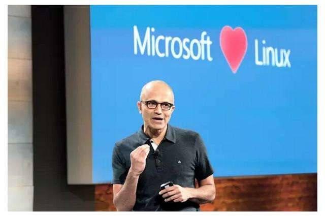
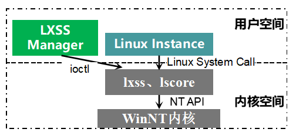

微软WSL——Linux桌面版未来之光
本文共3500余字，预计阅读时间11分钟，本文同步发布于知乎（账号silaoA）和微信公众号平台（账号伪码人）。
关注学习了解更多的Cygwin、Linux技术。
微软一年一度的build大会都是Windows开发者的盛会，往往发布酷炫的软硬件产品和新服务。为期3天的build 2019抢在Google IO 2019之前于2019年5月6日召开，在首日的主题演讲中微软发布了一系列软件和服务，其中就包括新一代WSL——WSL2和微软自家的终端模拟器Windows Terminal。
自从Satya Nadella执掌微软帝国以来，微软对开源社区态度发生180度转变，也不再视Linux为毒瘤，开始以实际行动践行“Microsoft love Linux”的誓言：微软的Azure支持Linux、开源.Net Core、开源VS Code、完善命令行对POSIX支持、搞Windows Subsystem for Linux黑科技、收购GitHub等。

微软在Windows上不断完善对命令行的支持，官方开发博客中特辟了commandline系列，积极接受用户反馈。此次发布的WSL2和Windows Terminal颇受关注，也在博客中给出了相关说明。以下称原版Windows Subsystem for Linux为WSL1，新版为WSL2。
0x00 回顾WSL1
在前文Cygwin系列（三）：盘点与Cygwin相似和相反的项目简单介绍过WSL1。WSL1的机制，总体上是在运行时将Linux System Call翻译为NT API调用，从而在NT内核基础之上模拟实现Linux内核。微软官方博客windows-subsystem-for-linux-overview描述了WSL1的架构组件，可以简化为下图。

LXSS Manager是普通的win32进程，相当于Linux子系统驱动的代理，还负责管理Linux进程。Linux Instance不是普通的win32进程，微软称为Pico Process，是Linux EFL程序的宿主进程，实现了沙盒技术中的一种机制。lxss、lscore两个组件是WSL1的核心，负责将Linux程序中的System Call “翻译”为等价的NT API调用，如fork翻译为NtCreateProcess、open翻译为NtOpenFile，kill翻译为NtTerminateProcess等。这两个组件根据洁净室（clean room）原则构建，完全不含Linux代码。
WSL1在运行时处理Linux System Call，模拟Linux内核，在ABI层面保持兼容性。Cygwin项目的思路其实也是构建和lxss、lscore作用一样的模拟层，但外人是无从得知NT API的详细情况的，因此Cygwin项目只能在Win32 API基础上构建Cygwin DLL，只能在API层面保持兼容性。Wine项目的角色与WSL1、Cygwin类似，只是作用方向相反。
无论是在ABI还是API层模拟，Linux/UNIX与Windows NT毕竟是两类内核，设计理念、设计标准等多方面差异甚大，无法实现完全对等模仿，WSL1和Cygwin都无法兼容所有Linux System Call，Wine也无法兼容所有Win32 API。这就造成有的程序无法在WSL1中运行，源码也无法在Cygwin中重新编译；同样有的程序无法在Wine中运行，源码无法在Linux/UNIX中重新编译。
0x01 WSL2
也许是因为WSL1靠翻译System Call来模拟Linux内核的坑太大填不下去了，这种黑科技思路此次被微软完全抛弃，换成了虚拟机/容器的思路，仅仅是名字上延续了WSL，再也不是当初那个WSL了。WSL2引入了修改版的Linux内核，基于最新的Linux 4.19，这也是Linux内核最新的长期支持版，新的内核经过了微软悉心改造，以便与Windows相配合，获得更好的用户体验。根据官方博客的说法，这个微软自家出品的内核也将在不久之后在Github上开源，届时不仅可以更加清楚地了解WSL2工作机制，玩家还可根据自身需要随心定制。WSL2将Linux内核塞到一个轻量级的虚拟机（Virtual Machine，VM）中运行，使用过程与WSL1保持一致，VM的启动、管理都藏在背后。
使用虚拟机的方式带来了运行效率和兼容性两方面的提升。根据微软自己的测试，与WSL1相较，在WSL2中解压zip文档速度提升了惊人的20倍，使用git clone、npm install、cmake提升大约2~5倍。由于使用了真正的Linux内核，意味着WSL2全面兼容Linux System Call，理论上能在GNU/Linux上运行的程序也都能在WSL2中不经修改直接运行。另外还带来一个好处是，可以更新Linux内核换取更高的效率和安全性，背靠微软这棵大树更新（微软背靠Linux基金会大树）。
WSL2首个版本会在2019年6月底Windows insider中推送。
0x02 Windows Terminal
Windows以图形界面起家而大获成功，但长久以来Windows对命令行的支持欠缺饱受诟病，命令提示符/Powershell界面丑陋、cmd/Powershell解释器语法怪异、不支持POSIX标准，最重要地没有GNU、BSD系的众多高效命令程序。在社区反馈下，微软近几年也在不断努力完善命令提示符、cmd解释器、PowerShell，如增加Unicode/UTF8支持、24色支持、更好看的字体、更灵活的配置等，但在Windows Console API上修修补补，始终是治标不治本。
此次微软发布的Windows Terminal是一款终端模拟器（terminal emulator）。老兵命令提示符、PowerShell继续履行历史兼容的职责，Windows Terminal抛掉了历史包袱另起炉灶，支持连接WSL、cmd解释器、Powershell、Powershell Core、SSH远程主机，主要有以下几个功能特性：
- 多标签页，这也是对众多终端模拟器呼声最高的功能需求，不同的标签页可以连接上述不同的解释器/主机，即同时可以作为本地终端和远程终端使用；
- 美化字体，使用GPU加速的字体渲染引擎，支持常规字符、特殊符号、emoji、图标，而且相较原来Console的GDI引擎速度更快，微软给终端另外配备了一款现代的等宽型字体；
- 灵活配置，以结构化文本保存设置项，可以给每个标签页、应用程序独立配置。

build大会之后，Windows Terminal在github一经开源便迅速冲上人气榜，预览版将于2019年夏天在Windows Store中提供。
0x03 小结
市面上已经有相当不错的终端模拟器，如Comemu、putty等，相对来说Windows Terminal只是个锦上添花的产品，没有WSL，Windows Terminal只是个好看一点的命令提示符而已。
Win10确确实实因WSL而不同，不管微软选择hard模式的黑科技路线还是常规无奇的虚拟机路线，对于用户而言，只要达成在Windows上高效运行Linux ELF程序这个目的就足够了，更何况虚拟机路线在运行速度、兼容性方面都有了很大的提升。可以说，一个Win10=Windows+Linux Server+Terminal，在Win10上同时享受Windows图形界面和Linux命令行的待遇，而且这两部分还有着很好的互操作性，图形界面和命令行不必彼此隔离，不必担心顾此失彼。
对比各种GNU/Linux桌面发行版惨淡的硬件驱动支持、图形环境与生俱来的不稳定性和低效、二流水准的界面设计，以及不同发行版之间严重的分裂（不一致性），Win10绝对担当得起最佳Linux发行版的称号。
诚如一部分评论所言，微软未来在不断优化WSL的同时，可能对NT内核也做出相应调整。想想[Cygwin系列（三）：盘点与Cygwin相似和相反的项目触屏9-02-26-Cygwin系列（三）：盘点与Cygwin相似和相反的项目.html)所述毛德操教授发起的Longene项目半途废止，统一内核的宏愿在Win10上实现亦未可知。
参考
- https://blogs.msdn.microsoft.com/wsl/2016/04/22/windows-subsystem-for-linux-overview/
- https://devblogs.microsoft.com/commandline/announcing-wsl-2/
- https://devblogs.microsoft.com/commandline/shipping-a-linux-kernel-with-windows/
- https://devblogs.microsoft.com/commandline/introducing-windows-terminal/
如本文对你有帮助，或内容引起极度舒适，欢迎分享转发或点击下方捐赠按钮打赏 ^_^
- 本文链接：https://silaoa.github.io/2019/2019-05-08-微软WSL——Linux桌面未来之光.html
- 版权声明：本文为原创文章，如需转载，请联系stsilaoa@gmail.com 或 公众号 伪码人 或知乎私信 silaoA。